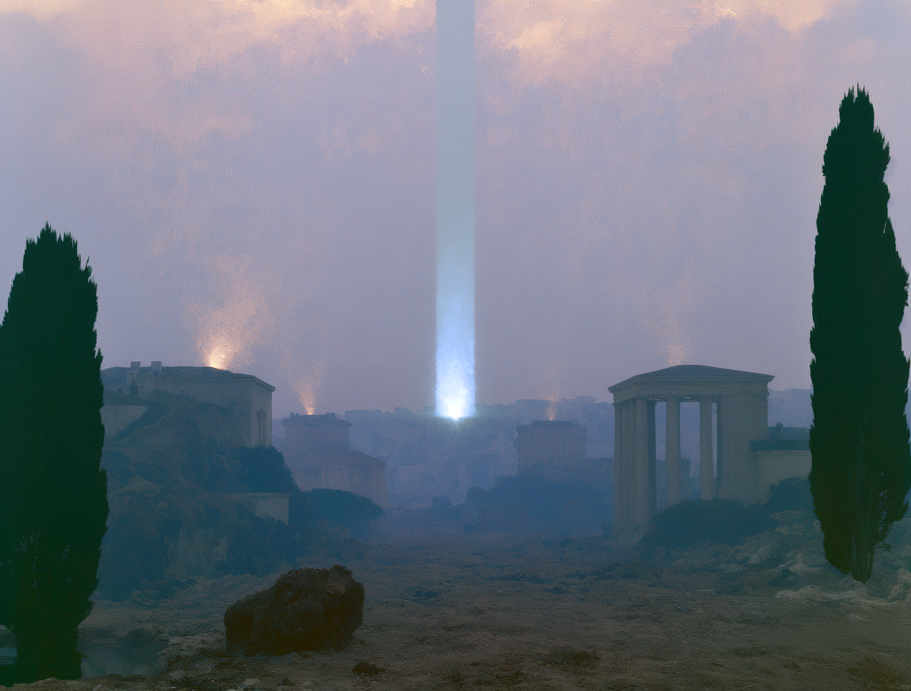

LAYER 01
Structured data
Every source your operation runs on — ERPs, CRMs, documents, IoT streams, phone-call transcription — connected into a governed foundation with full lineage. Nothing enters the system without provenance.